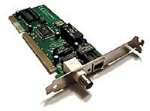

Clique sobre as áreas destacadas em vermelho

Clique sobre as áreas destacadas em vermelho
fonte inicia o processo de distribuição de energia para os componentes do micro. Ela leva energia a todos os componentes. As principais características das fontes, como tensão, potência, PFC, eficiência, tipos de conectores.
O leitor e gravador de CD/DVD é um aparelho que reconhece as informações armazenadas nas mídias e transmite estas informações para o aparelho eletrônico, que lá e interpreta os dados.
Este aparelho pode ser um computador, um aparelho de DVD, ou qualquer outro dispositivo que tenha um leitor óptico compatível com o tipo de mídia.
A placa mãe (do inglês: mainboard ou motherboard) é a parte do computador responsável por conectar e interligar todos os componentes do computador, ou seja, processador com memória RAM, disco rígido, placa gráfica, entre outros. Além de permitir o tráfego de informações, a placa também alimenta alguns periféricos com a energia elétrica que recebe da fonte de alimentação.
O HD, Hard disk ou disco rígido, é um componente de hardware do computador. Sua utilidade é o armazenamento de dados. Isto significa que quando algum arquivo é armazenado, ele não se perde com o desligamento da máquina (como acontece com a memória RAM).
A placa de rede é o hardware que permite aos computadores conversarem entre si através da rede. A sua função é controlar todo o envio e recepção de dados através da rede.
